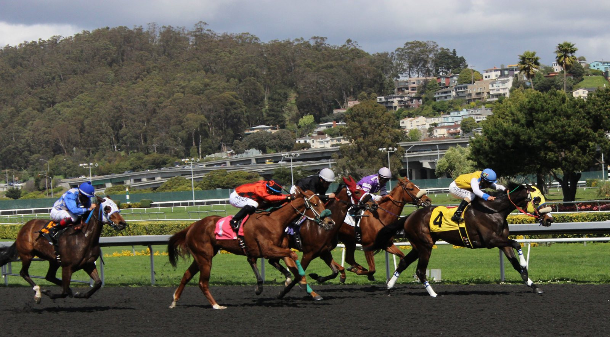

Mo Chuisle, la potranca de 825.000 dólares, se estrena ganando en Santa Anita
La hija de Omaha Beach salió favorita a 2-1 en su debut sobre seis furlongs en Santa Anita y mantuvo a raya a Vino Vino Vino por cuerpo y medio.

La carrera se decidió a la salida de la curva. Hasta entonces Mo Chuisle había corrido sin prisas, desahogada y lejos de la cabeza, tras un primer cuarto de milla en 22,28 s. Ahí se fue al frente sin que se lo pidieran y abrió hueco mientras la media milla se cerraba en 45,72 s.
Entró en la recta con hasta cuatro cuerpos de ventaja. Vino Vino Vino, hijo de Vino Rosso, apretó al final, pero se quedó a cuerpo y medio en la meta. El crono fue de 1:12,24.
La potranca, hija de Omaha Beach y Charmeer por Candy Ride (ARG), corre para Sabby Racing y la prepara Michael McCarthy. La crió Ralph Ebert en Kentucky. Jesse Hoppel la compró por 130.000 dólares en la venta de octubre de Fasig-Tipton del año pasado. En abril, en OBS, cubrió el cuarto de milla en 20 3/5 s y cambió de manos por 825.000 dólares.
Por Martín Larrañeta